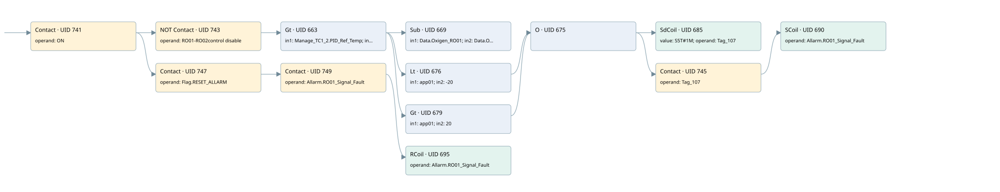

ro01-ro02 signal compare fault
allarms 3 · 검색 색인 순서 7 · 원본 내부 NID 추정 7
백업 PLF 원본의 3171791 바이트 위치에서 복원한 XML. 검색 문서 1985의 객체 키 16102200776b000000000000와 연결했다. 이름 해석 18/18개. 남은 RefId는 상수 또는 미해석 참조다.
연결 구조 다시 그리기
원본 Part/PCon/Wire를 이용한 연결도다. TIA 화면의 래더 배치 또는 실행 결과를 재현한 그림은 아니다. 핀 연결은 아래 표와 원본 XML을 기준으로 읽는다. 노드 위에 마우스를 두면 피연산자 이름을 볼 수 있다.

접점·코일·블록과 피연산자
| Part UID | Gate | Negated 핀 | 연결 피연산자 |
|---|---|---|---|
| 741 | Contact | operand = ON | |
| 743 | Contact | operand | operand = RO01-RO02control disable |
| 663 | Gt | in1 = Manage_TC1_2.PID_Ref_Temp; in2 = 650.0 | |
| 669 | Sub | in1 = Data.Oxigen_RO01; in2 = Data.Oxigen_RO02; out = app01 | |
| 676 | Lt | in1 = app01; in2 = -20 | |
| 679 | Gt | in1 = app01; in2 = 20 | |
| 675 | O | ||
| 685 | SdCoil | value = S5T#1M; operand = Tag_107 | |
| 745 | Contact | operand = Tag_107 | |
| 690 | SCoil | operand = Allarm.RO01_Signal_Fault | |
| 747 | Contact | operand = Flag.RESET_ALLARM | |
| 749 | Contact | operand = Allarm.RO01_Signal_Fault | |
| 695 | RCoil | operand = Allarm.RO01_Signal_Fault |
접점 경로를 펼친 조건식
Contact·O/A·비교기의 원본 연결을 읽기 쉽게 펼친 보조 해석이다. POWER는 전원 레일 시작을 뜻한다. 호출 블록·에지·타이머의 내부 동작과 다중 쓰기 순서는 이 표로 실행 검증하지 않았다. 미해석 핀과 RefId는 원문 연결표에서 확인한다.
| UID | 동작 | 대상 | 원본 접점 경로 | 내용 |
|---|---|---|---|---|
| 685 | SdCoil | Tag_107 | ((((ON AND NOT [RO01-RO02control disable]) AND [Manage_TC1_2.PID_Ref_Temp > 650.0]) AND [app01 < -20]) OR (((ON AND NOT [RO01-RO02control disable]) AND [Manage_TC1_2.PID_Ref_Temp > 650.0]) AND [app01 > 20])) | 시간 동작 SdCoil; 타이머 의미 추가 확인 / 시간 인자 S5T#1M |
| 690 | SCoil | Allarm.RO01_Signal_Fault | (((((ON AND NOT [RO01-RO02control disable]) AND [Manage_TC1_2.PID_Ref_Temp > 650.0]) AND [app01 < -20]) OR (((ON AND NOT [RO01-RO02control disable]) AND [Manage_TC1_2.PID_Ref_Temp > 650.0]) AND [app01 > 20])) AND Tag_107) | 조건 성립 시 Set |
| 695 | RCoil | Allarm.RO01_Signal_Fault | ((ON AND Flag.RESET_ALLARM) AND Allarm.RO01_Signal_Fault) | 조건 성립 시 Reset |
원본 배선 연결
| Wire UID | 동일 Wire 연결 끝점 |
|---|---|
| 751 | Powerrail {} ↔ Part 741.in |
| 714 | ORef 696 (ON) ↔ Part 741.operand |
| 742 | Part 741.out ↔ Part 743.in ↔ Part 747.in |
| 715 | ORef 697 (RO01-RO02control disable) ↔ Part 743.operand |
| 744 | Part 743.out ↔ Part 663.pre |
| 716 | ORef 698 (Manage_TC1_2.PID_Ref_Temp) ↔ Part 663.in1 |
| 717 | ORef 699 (650.0) ↔ Part 663.in2 |
| 718 | Part 663.out ↔ Part 669.en ↔ Part 676.pre ↔ Part 679.pre |
| 719 | ORef 700 (Data.Oxigen_RO01) ↔ Part 669.in1 |
| 720 | ORef 701 (Data.Oxigen_RO02) ↔ Part 669.in2 |
| 721 | Part 669.out ↔ ORef 702 (app01) |
| 722 | ORef 703 (app01) ↔ Part 676.in1 |
| 723 | ORef 704 (-20) ↔ Part 676.in2 |
| 724 | Part 676.out ↔ Part 675.in1 |
| 725 | ORef 705 (app01) ↔ Part 679.in1 |
| 726 | ORef 706 (20) ↔ Part 679.in2 |
| 727 | Part 679.out ↔ Part 675.in2 |
| 728 | Part 675.out ↔ Part 685.in ↔ Part 745.in |
| 729 | ORef 707 (S5T#1M) ↔ Part 685.value |
| 730 | ORef 708 (Tag_107) ↔ Part 685.operand |
| 731 | ORef 709 (Tag_107) ↔ Part 745.operand |
| 746 | Part 745.out ↔ Part 690.in |
| 733 | ORef 710 (Allarm.RO01_Signal_Fault) ↔ Part 690.operand |
| 736 | ORef 711 (Flag.RESET_ALLARM) ↔ Part 747.operand |
| 748 | Part 747.out ↔ Part 749.in |
| 737 | ORef 712 (Allarm.RO01_Signal_Fault) ↔ Part 749.operand |
| 750 | Part 749.out ↔ Part 695.in |
| 739 | ORef 713 (Allarm.RO01_Signal_Fault) ↔ Part 695.operand |
식별자 해석 근거 18개
| ORef UID | RefId | 이름 | IdentXmlPart 파일 | 해석 방법 |
|---|---|---|---|---|
| 696 | 1 | ON | 0686-IdentXmlPart.xml | UID/RID + search-text + NID agreement |
| 697 | 65 | RO01-RO02control disable | 0686-IdentXmlPart.xml | UID/RID + search-text + NID agreement |
| 698 | 169 | Manage_TC1_2.PID_Ref_Temp | 0684-IdentXmlPart.xml | UID/RID + search-text + NID agreement |
| 699 | 173 | 650.0 | 0683-IdentXmlPart.xml | literal candidate: UID/RID/NID + nearby named declarations + search-text agreement |
| 700 | 52 | Data.Oxigen_RO01 | 0684-IdentXmlPart.xml | UID/RID + search-text + NID agreement |
| 701 | 67 | Data.Oxigen_RO02 | 0684-IdentXmlPart.xml | UID/RID + search-text + NID agreement |
| 702 | 68 | app01 | 0685-IdentXmlPart.xml | UID/RID + search-text + NID agreement |
| 703 | 68 | app01 | 0685-IdentXmlPart.xml | UID/RID + search-text + NID agreement |
| 704 | 69 | -20 | 0683-IdentXmlPart.xml | literal candidate: UID/RID/NID + nearby named declarations + search-text agreement |
| 705 | 68 | app01 | 0685-IdentXmlPart.xml | UID/RID + search-text + NID agreement |
| 706 | 18 | 20 | 0683-IdentXmlPart.xml | literal candidate: UID/RID/NID + nearby named declarations + search-text agreement |
| 708 | 71 | Tag_107 | 0686-IdentXmlPart.xml | UID/RID + search-text + NID agreement |
| 707 | 46 | S5T#1M | 0683-IdentXmlPart.xml | literal candidate: UID/RID/NID + nearby named declarations + search-text agreement |
| 709 | 71 | Tag_107 | 0686-IdentXmlPart.xml | UID/RID + search-text + NID agreement |
| 710 | 72 | Allarm.RO01_Signal_Fault | 0684-IdentXmlPart.xml | UID/RID + search-text + NID agreement |
| 711 | 24 | Flag.RESET_ALLARM | 0684-IdentXmlPart.xml | UID/RID + search-text + NID agreement |
| 712 | 72 | Allarm.RO01_Signal_Fault | 0684-IdentXmlPart.xml | UID/RID + search-text + NID agreement |
| 713 | 72 | Allarm.RO01_Signal_Fault | 0684-IdentXmlPart.xml | UID/RID + search-text + NID agreement |
검색 코드 보조 자료
참조 명칭을 찾기 위한 자료이며 실행 순서나 AND/OR 관계는 위 연결표로 확인한다.
"on" "ro01-ro02control disable" "manage_tc1_2".pid_ref_temp 650.0 sub "data".oxigen_ro01 "data".oxigen_ro02 "flag".reset_allarm "allarm".ro01_signal_fault "allarm".ro01_signal_fault #app01 -20 "tag_107" s5t#1m "tag_107" "allarm".ro01_signal_fault #app01 20 #app01